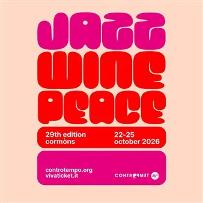

da gio 22 ott a dom 25 ott
Jazz&Wine of Peace 2026
Concerti jazz, incontri e percorsi nel Collio, tra teatri e cantine, per un festival che intreccia musica, paesaggio ed enogastronomia.
 Indicazioni
Indicazioni
- Costi e prenotazioni
- Costo non indicato · Prenotazione non indicata
- Programma
- Programma raccolto. Gli appuntamenti delle diverse schede sono riuniti in questa pagina.
- In caso di maltempo
- Nessuna indicazione specifica pubblicata.
- Note
- Le schede dei singoli appuntamenti sono state unite nella manifestazione principale.
L’EVENTO
Descrizione completa
Nel Collio, una settimana ricca di musica, incontri, natura, paesaggi, esperienze di alto livello. Un incantesimo che valorizza il nostro territorio in tutte le sue peculiarità: la terra, le offerte enogastronomiche, l’altissima offerta culturale e musicale, le potenzialità turistiche, l’eclettismo, il valore della “mescolanza” delle genti, la concentrazione di meraviglie storiche e naturali in così pochi chilometri quadrati.
Programma completo
Dj e digger coinvolgente e eclettivo, seleziona da più di vent’anni musica della sua dimensione, per trasferirla al pubblico in maniera sempre diversa e inconsueta, spaziando tra tropicalismi jazz e soul, disco oscura e downtempo grooves, mixati con l’ambiente come fosse una istantanea di suono inconsueto. Ha diviso la console con Bjorn Torske, 2Many Djs, Moderat, Omar S, Leo Mas, Lefto e molti altri.
Pasquale Mirra : vibraphone, log drum, Tibetan bells, timpani, percussion Per questo progetto in collaborazione con Ljubljana Jazz Festival, il vibrafonista Pasquale Mirra si ispira alla poesia dello sloveno Srečko Kosovel, nel centenario della prematura scomparsa del poeta. Cogliendone la visione e l’energia, con un approccio intuitivo e sperimentale al suono evoca la ricerca del poeta di nuove forme espressive. Attraverso ritmi, trame e una strumentazione accuratamente scelta, Mirra esplora le diverse dimensioni della poesia di Kosovel. Progetto commissionato e prodotto da Ljubljana Jazz Festival, in collaborazione con Circolo Controtempo – Jazz & Wine of Peace Festival.
Teis Semey : guitar, concept
Andreja Tull : voice, trumpet
Sebastiano Prade : alto and tenor sax
Alberto Rizzarelli : piano
Lorenzo Leghissa : electric guitar
Luca Mattiuzzo : electric bass, double bass
Ludovico Boni : drums Condividere musica, prove, idee, ma anche domandarsi cosa vuol dire fare jazz in Europa oggi e in che modo provare a esplorare i linguaggi più avventurosi. L’artista in residenza del Festival, Teis Semey guida alcuni allievi e allieve di jazz del Conservatorio Tartini di Trieste in un workshop che darà vita a una breve, ma intensa performance.
Liam Shortall : trombone, bass, keys, electronics
Graham Costello : drums, electronics
Mateusz Sobieski : sax, electronics Definito dall’influente Gilles Peterson “una delle menti più brillanti della nuova scena jazz britannica, un suono che è pura energia” corto.alto, giovane compositore, producer e polistrumentista di Glasgow arriva a Cormons per chiudere il festival con un live di rara potenza viscerale e sonora. Nella sua musica convivono improvvisazione jazz, produzione elettronica, broken beat, dub e riferimenti hip-hop. Il suo primo album Bad With Names è stato selezionato per l’iconico Mercury Prize (2024) e ha vinto il premio Miglior Album agli Scottish Jazz Awards e il premio Artista dell’Anno ai Jazz FM Awards (2025) e anche il nuovissimo Some Small Fortune ne sta confermando il talento strabordante. Posti esclusivamente in piedi
Francesco Guidolin : tenor and soprano sax
Gabriele de Leporini : guitar
IL PROGRAMMA
Programma e orari
Le singole date appartengono alla stessa manifestazione. Ogni sede verificata dispone delle proprie indicazioni.
Programma completo della manifestazione
- Il calendario integrale è disponibile nella fonte ufficiale e può comprendere appuntamenti precedenti o successivi alle tre settimane mostrate.
Sabato 24 ottobre · Jazz&Wine of peace 2026 -EVEREST PARISI DJ SET
Cormons · Enoteca di Cormòns Piazza XXIV Maggio
- Dj e digger coinvolgente e eclettivo, seleziona da più di vent’anni musica della sua dimensione, per trasferirla al pubblico in maniera sempre diversa e inconsueta, spaziando tra tropicalismi jazz e soul, disco oscura e downtempo grooves, mixati con l’ambiente come fosse una…
Sabato 24 ottobre · Jazz&Wine of peace 2026 - Pasquale Mirra “Jagged Rhythms”
Capriva del Friuli · Azienda Vinicola Russiz Superiore - Tenute Marco Felluga, Via Russiz, 7, Capriva del Friuli
- Pasquale Mirra: vibraphone, log drum, Tibetan bells, timpani, percussion Per questo progetto in collaborazione con Ljubljana Jazz Festival, il vibrafonista Pasquale Mirra si ispira alla poesia dello sloveno Srečko Kosovel, nel centenario della prematura scomparsa del poeta.…
Sabato 24 ottobre · Jazz&Wine of peace 2026 - Teis Semey Workshop – Final Performance, in collaboration with the Tartini Conservatory of Trieste
Cormons · Teatro Comunale di Cormons
- Teis Semey: guitar, concept Andreja Tull: voice, trumpet Sebastiano Prade: alto and tenor sax Alberto Rizzarelli: piano Lorenzo Leghissa: electric guitar Luca Mattiuzzo: electric bass, double bass Ludovico Boni: drums Condividere musica, prove, idee, ma anche domandarsi cosa…
Domenica 25 ottobre · Jazz&Wine of peace 2026 - CORTO.ALTO
San Floriano del Collio · Azienda Agricola Gradis’ciutta Località Giasbana, 32, San Floriano del Collio
- Liam Shortall: trombone, bass, keys, electronics Graham Costello: drums, electronics Mateusz Sobieski: sax, electronics Definito dall’influente Gilles Peterson “una delle menti più brillanti della nuova scena jazz britannica, un suono che è pura energia” corto.alto, giovane…
Domenica 25 ottobre · Jazz&Wine of peace 2026 - DAC TRIO ENCORE
Cormons · Enoteca di Cormòns Piazza XXIV Maggio, 21, Cormons
- Francesco Guidolin: tenor and soprano sax Gabriele de Leporini: guitar Francesco Vattovaz: drums Salutiamo il Festival nel calore dell’Enoteca, con il DAC trio, viaggio musicale che nasce da un’esplorazione sonora senza confini, dove la tradizione si fonde con l’innovazione.…
Domenica 25 ottobre · Jazz&Wine of peace 2026 - LEA GASSER “Solo”
Farra d'Isonzo · TENUTA VILLANOVA Via Contessa Beretta, 29, Villanova
- Lea Gasser: accordion, electronics, voice Nel suo progetto solista, la fisarmonicista e compositrice svizzera Lea Gasser fonde elementi di musica da camera contemporanea, jazz ed esplorazione sonora improvvisata. Gli effetti elettronici ampliano le potenzialità del suo strumento…
INFORMAZIONI UTILI
Prima di partire
- Controllare la fonte prima di partire.
ORGANIZZAZIONE